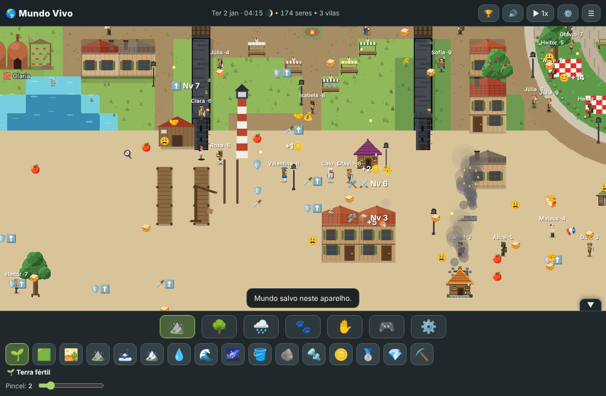
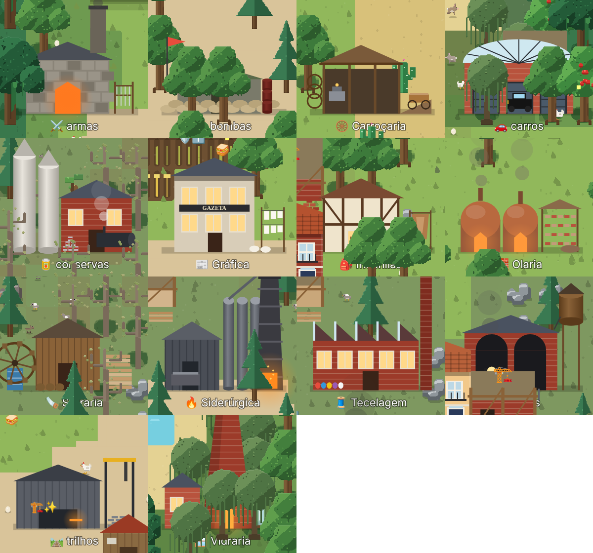
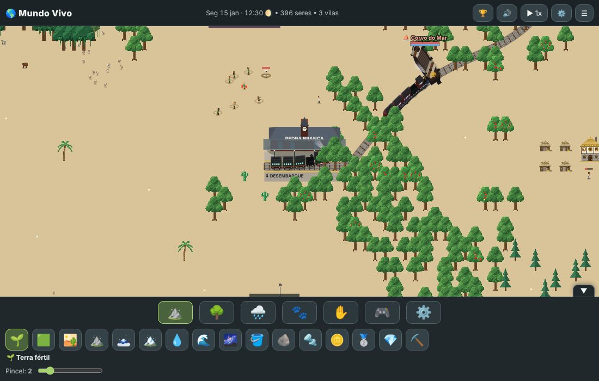
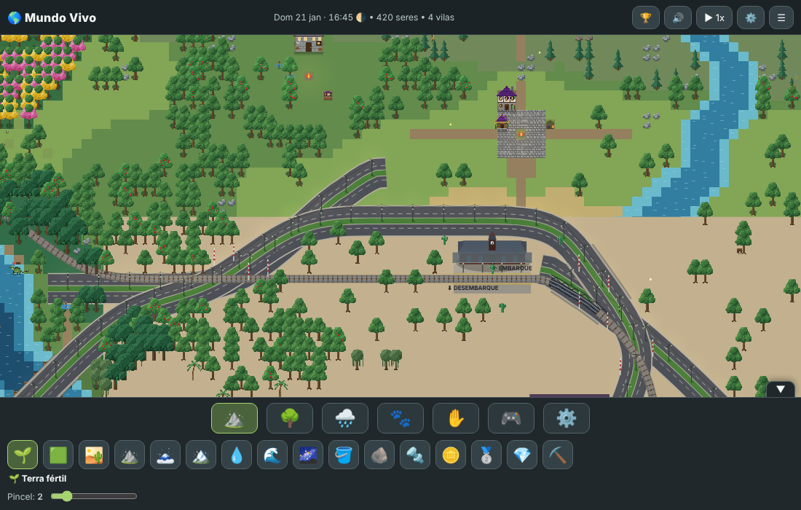
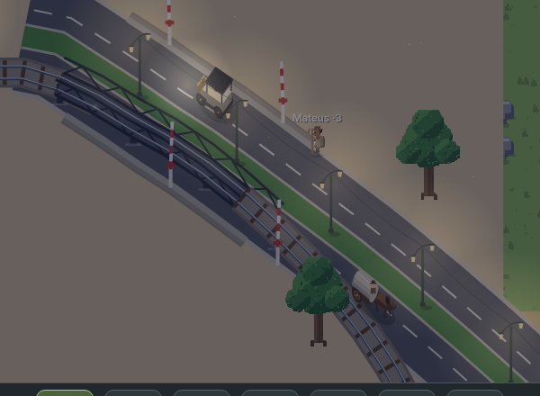
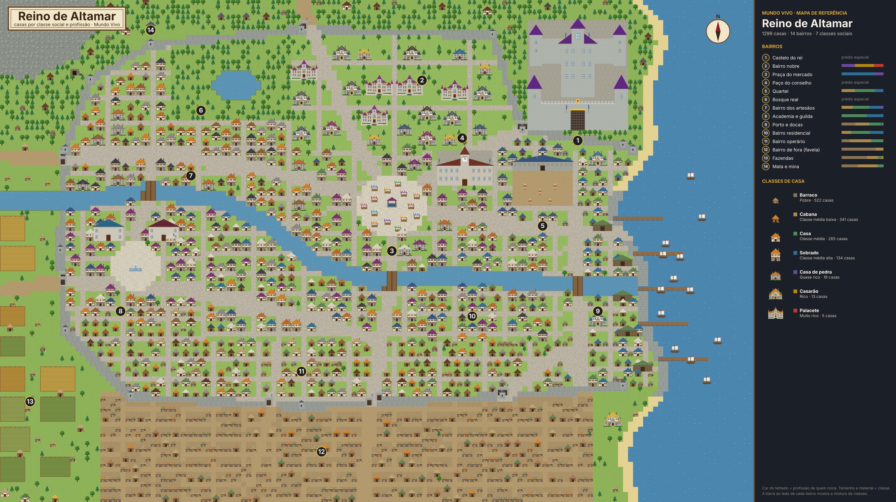
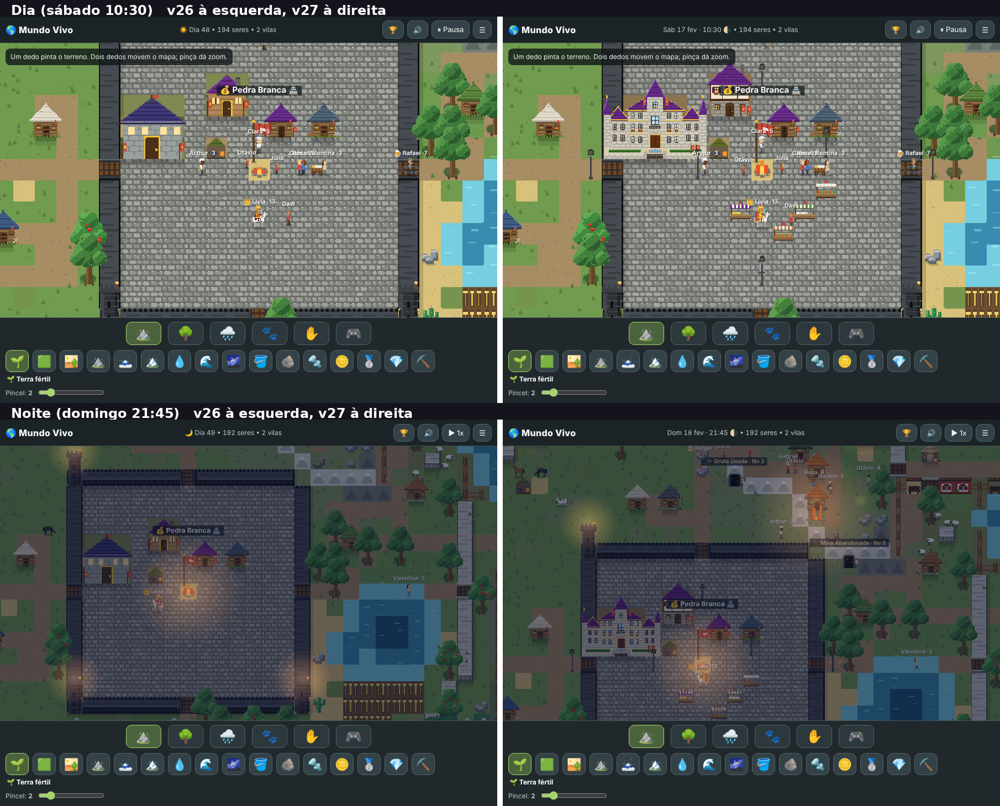
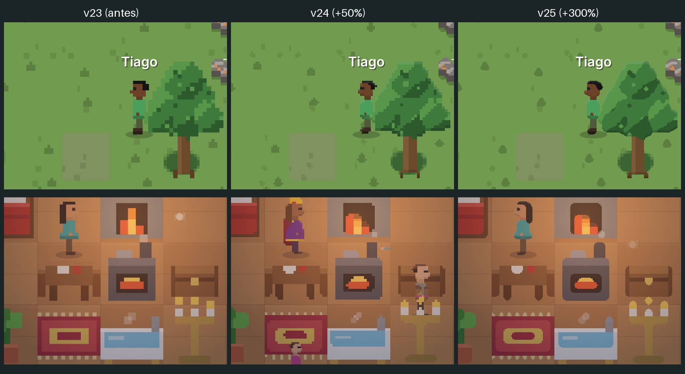

Sobre o jogo
Sistemas do mundo
Mapas
IA cartógrafa testa vários mapas e fica com o melhor. 7 modelos, até 240 × 180.
Natureza
Biomas brasileiros com cadeia alimentar: herbívoro, espalhador de sementes e predador. Pode haver extinção.
Criaturas
Dragões com toca e ovos, lobisomens na lua cheia, monstros e chefes de caverna.
Gente
Necessidades, família, sonhos, personalidade, XP e nível de ofício, velhice e herança.
Evolução
Os melhores de cada ofício passam os genes para a geração seguinte.
Economia
Livre mercado: quem produz vende na praça. Preço por oferta e procura, 3 impostos do rei.
Cidades
Do barraco ao casarão vitoriano. Sobrados geminados em ruas, praças, postes e circo.
Roupas e avatar
Conjuntos por profissão e classe social. Editor completo de personagem.
Combate
Guildas elementais, 24 habilidades, duelos de espada e guerras entre reinos.
Política
Revolta, revolução, queda do rei, capitalismo ou socialismo, eleições, impeachment e corrupção.
Religião
Calendário de cultos, altares e sacrifícios.
Mar
Portos, estaleiros, navios com tripulação, andar no convés e combate naval.
Cavernas
Exploração, monstros, chefes e tesouros.
Indústria
Minas por nível, 14 fábricas e 13 itens novos, do aço ao jornal da cidade.
Transporte
Ferrovias com pontes e túneis, estações com relógio, trens, avenidas, carros e carroças.
Galeria
















Como jogar
No modo deus você usa pincéis de terreno, natureza, chuva e animais. No 🎮 modo jogador cria seu personagem, controla qualquer NPC ou vira semideus com os 4 elementos. O painel ⚙️ liga e desliga cada mecanismo do mundo.
Os mundos ficam salvos no próprio navegador ou celular.
| Ação | Teclado |
|---|---|
| Andar | WASD / setas |
| Ataques | 1 2 3 |
| Dash · pulo · pulo+dash | Q C X |
| Bloquear / esquivar | V |
| Trocar elemento | Z |
| Poção de vida | H |
No celular, joystick e botões na tela, que você pode mover e redimensionar.
Histórico de versões
- v37
Uma casa por casal, cidades densas com sobrados, 8 fábricas e 13 itens novos
jogar esta versão · relatório - v36
- v35
- v34
Revolução industrial: casas de tijolo, minas, fábricas, ferrovia, inventário
jogar esta versão · relatório - v33
- v32
- v31
- v30
- v29
- v28
- v27
- v26
- v25
- v24
- v23
- v22
- v21
- v20
- v18–19
Documentos de design
Instalar no Android
- Baixe o MundoVivo-v37.apk no celular.
- Toque no arquivo e permita instalar apps desta fonte.
- Pronto: funciona sem internet. Cada versão nova instala por cima sem perder os mundos salvos.